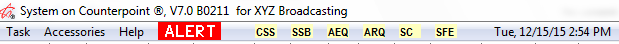

Task Monitor
The Task Monitor feature runs in the background and checks the status of various tasks that either run periodically on a schedule or run continuously, and shows the status of each monitored task in the title bar of the Traffic and Affiliate system.
Tasks that require monitoring are configured using the Monitor Setup program. (The tasks themselves are launched through CSI Server Manager or Windows Task Scheduler, not through Task Monitor.)
Monitor Setup
To use the Task Monitor feature, you must have a correctly configured Traffic.ini and Affiliat.ini (even if the Affiliate system is not being used), and a correctly configured System DSN. For more information on setting up the Traffic.ini and Affiliat.ini, please see the help document “INI Values and Examples” on the Counterpoint website.
To create a shortcut for the Monitor Setup program, make the Target point to MonitorSetup.exe in the Exe folder, and the Start In point to the Data folder (typically csi\prod\data).
Defining Tasks to Monitor
Double click on the Monitor Setup shortcut to launch the program to define or edit the tasks that will be monitored.
The following tasks are available for monitoring, with their two or three letter abbreviation codes:
- CSS: Contract Spot Scheduler
- SSB: Station Spot Builder
- AEQ: Affiliate Export Queue
- ASI: Affiliate Spot Import
- AMB: Affiliate Measurement Builder
- ARQ: Affiliate Report Queue
- ASG: Avail Summary Generation
- SC: Set Credit
- CE: Corporate Export
- SFE: Sales Force Export
- ME: Matrix Export
- EPE: Efficio Projection Export
- ERE: Efficio Revenue Export
- GPE: Get Paid Export
- BD: Backup Data
- TE: Tableau Export
- WVM: Web Vendor Manager
Service Column
The Service column is where you indicate that a task should be monitored. The choices are:
- None: any task that does not require monitoring is automatically set to “None” (will show a blank in the Service field).
- CSI Service: select this option for tasks run using the CSI Server Manager feature.
- Task Scheduler: select this option for tasks run using Windows Task Scheduler.
- Web Service: this option is only for the Web Vendor Import task.
Toggle the Service field to the appropriate value for any task that requires monitoring.
For example, if the Station Spot Builder will be launched using Windows Task Scheduler, set the Service to “Task Scheduler”.
If you do not wish for a task to be monitored, simply leave the Service column blank. Only monitored tasks will appear on the title bar of the Traffic and Affiliate systems.
Run Column
The Run column must be set for any monitored task. The following options are available:
- Continuous: continuous tasks run continuously, without stopping. There are five tasks designed for use in Continuous mode: Contract Spot Scheduler, Station Spot Builder, Affiliate Export Queue, Affiliate Report Queue, and Web Vendor Manager. (All other tasks are designed for use with the Periodic mode.) Once you select “Continuous” and press Tab, the remaining fields for that task will turn yellow as they are not applicable to Continuous tasks.
- Periodic: Periodic tasks do not run continuously but run on a regular schedule. When selecting “Periodic”, the Days the task run on must be selected from the Days field.
Days Column
For Periodic tasks, you must indicate the days on which they will be run, by clicking in the Days column and selecting the appropriate days.
The status of Periodic Tasks is checked regularly by the Traffic and Affiliate system. It will only be flagged as red if it’s past the point where it was supposed to have been run, using the days that are configured here.
Monthly Column
The Monthly fields (Period and Days After) are not used.
Saving Changes
Once you have finished defining your Tasks, click Save and close the screen. Your tasks are now set to be monitored and will appear in the Traffic and Affiliate system title bar.
Counterpoint Menu Items
The tasks that are to be monitored will appear abbreviated in the Traffic and Affiliate title bar, to the left of the date. Each system shows all tasks scheduled to be monitored (Traffic and Affiliate system tasks).
Traffic System Example

Affiliate System Example

The status of each task is color coded:
- Tasks are yellow while their status is being checked or if the status cannot be determined.
- Continuous Tasks show in green if running and red if not running.
- Periodic Tasks will be green if run successfully as scheduled and red if it’s gone past the time when it was next supposed to have been run.
To see the full name of a task, click on the abbreviation.
Failed Tasks
If a task is found to have failed, that is, a Continuous task has been detected to have stopped running or a Periodic task has gone past the point when it was supposed to have run, the indicator in the title bar will turn red and after an hour passes, an alert email will be sent to Counterpoint support for assistance.
Monitor ID Settings
For troubleshooting purposes and to add additional customization, if needed, a “MonitorID” statement can be added to the Locations and TestLocations section of the Traffic.ini and Affiliat.ini as follows:
For the Production system:
MonitorID = Production
For the Test system:
MonitorID = Test
By doing this, the text of Task Monitor emails that get sent when a task is found to have failed will also include whether the email was generated by the Production or Test system.
In addition, the following MonitorID settings are also available: Off, IconsOff, and EmailOff.
MonitorID = Off
The Task Monitor menu icons are hidden, and the Task Monitor emails will not be sent.
MonitorID = IconsOff
The Task Monitor menu icons are hidden, and the Task Monitor emails will be sent when needed.
MonitorID = EmailOff
The Task Monitor menu icons are shown, and the Task Monitor emails will not be sent.